加菲猫
安静、会讨好主人，善于察言观色。容易有泪痕、呼吸系统等疾病、智商低、没有生存技能。每天帮它擦洗眼睛，饮食保持清淡，避免出现泪痕，平时要耐心教导，比如使用猫砂盆、埋便等都要教它。
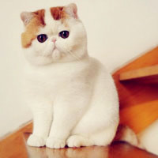狸花猫
长相帅气、聪明、身体强壮、捕猎能力优秀、适应力强。高冷、精力旺盛、经常跑出去。狸花猫精力比较旺盛，向往自由，不适应圈养。
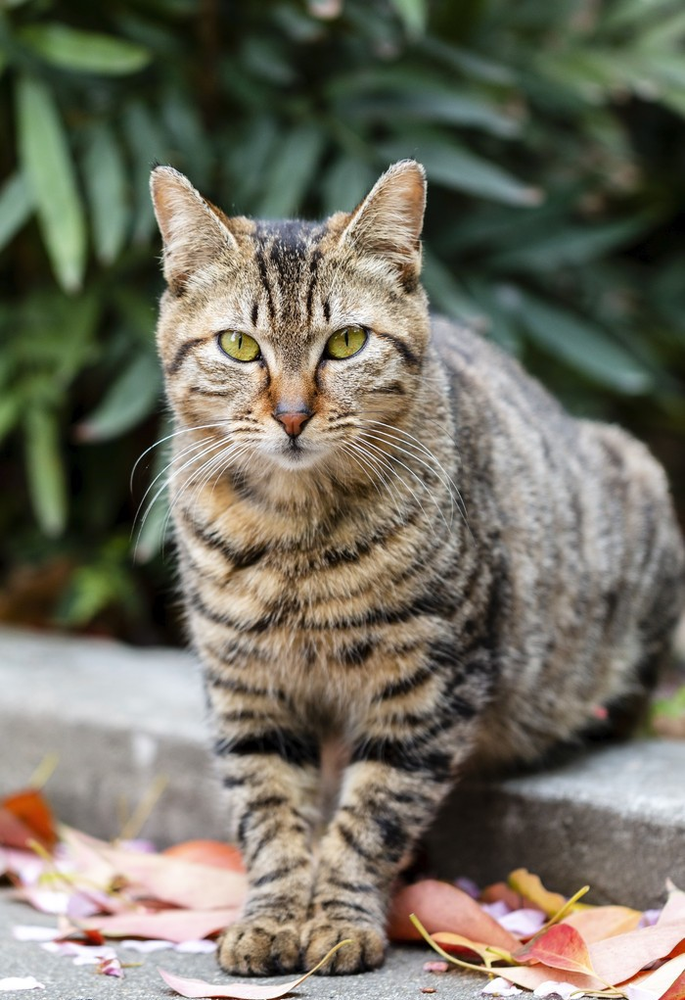橘猫
温顺、亲人、粘人、爱撒娇、不挑食、容易发腮、撸起来手感很好。贪吃、容易发胖。橘猫很贪吃，而且是容易发胖的体质，宠主平时要控制它的饮食，别让它吃太多，另外，最好给它选一款高蛋白中低脂肪的猫粮为主食。
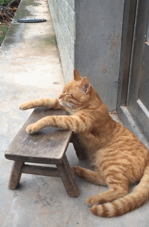奶牛猫
活泼、性格开朗、沙雕、社交 NB、喜欢和人亲近。精力旺盛，好奇心强、爱拆家搞破坏，“猫中哈士奇”。奶牛猫精力比较旺盛，平时会拆家，晚上也会跑酷，宠主在白天的时候多跟它互动，消耗它的精力。在跟奶牛猫互动的时候，适当给它奖励些零食，它会更开心的。
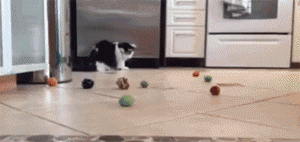临清狮子猫
长相漂亮，性格温和，体质好，不容易生病，鸳鸯眼很好看。掉毛严重，体味比较大。临清狮子猫毛发比较多，而且容易散发臭气，宠主平时要注意护理，更要注重饮食，可以给它准备一款含肉量高，容易消化的猫粮为主食。
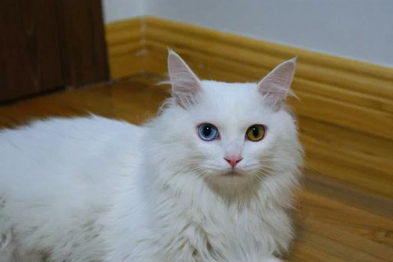布偶猫
长相漂亮、安静、粘人、脾气超好。玻璃胃，毛发难打理，体质差，容易焦虑。注意饮食的清淡，可以给它选择一款含有益生菌的猫粮为主食，每天帮它梳理毛发，避免打结。
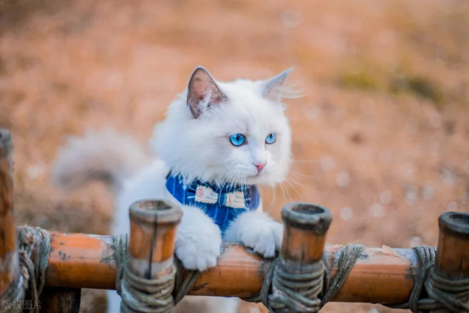波斯猫
波斯猫性情温和友好，乐于被抚摸，能与人和其他宠物融洽相处。它们相对稳重安静，不喜欢喧闹，运动需求较低，发声频率低，喜欢在安静的地方观察家中情况，也能忍耐一定的孤独。
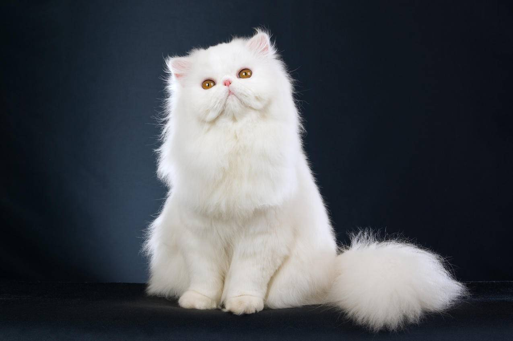美短
活泼好动，运动能力强，忍耐性好，适合作为伴侣猫。好奇心强，喜欢搞破坏，精力旺盛，晚上会跑酷。白天多陪它互动，消耗它的精力。
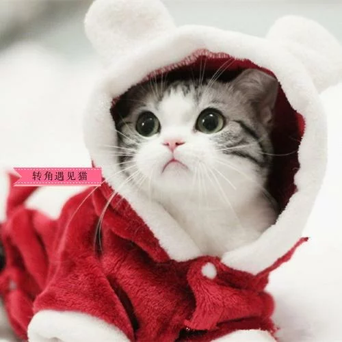暹罗猫
体质好、忠诚、活泼、粘人。爱叫、吵闹，比较躁动，容易长残，变成“挖煤工”。暹罗猫像狗狗一样忠诚，一生只认一个主人，一旦被主人抛弃，可能会抑郁而死，所以饲养了，就要负责它一生。

无毛猫
聪明、感情细腻、安静、温顺、愿意听主人唠叨。长相像外星人，体质差，怕冷又怕热。冬天要做好保暖工作，夏天要给它涂防晒霜，需要主人的精心照料。
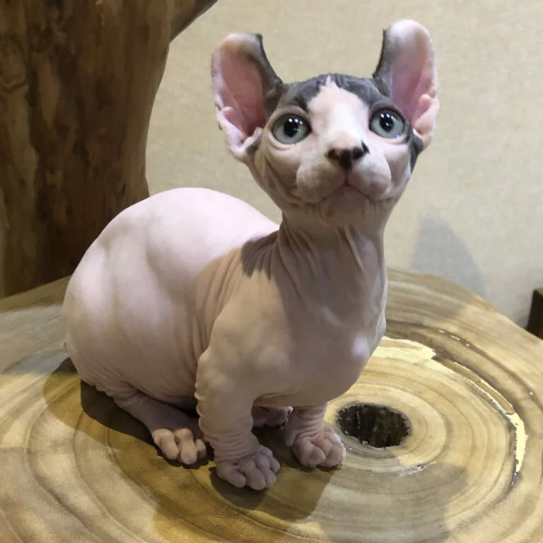金渐层
金渐层性格极为友善温柔，大胆好奇，不怕生，不乱发脾气，也不会乱吵乱叫，非常喜欢亲近主人。
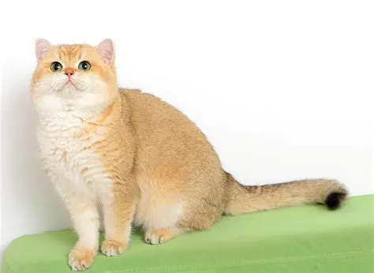蓝渐层
性格极为友善温柔，喜欢与人类互动，非常喜欢被抚摸和拥抱，也能与其他宠物友好相处。
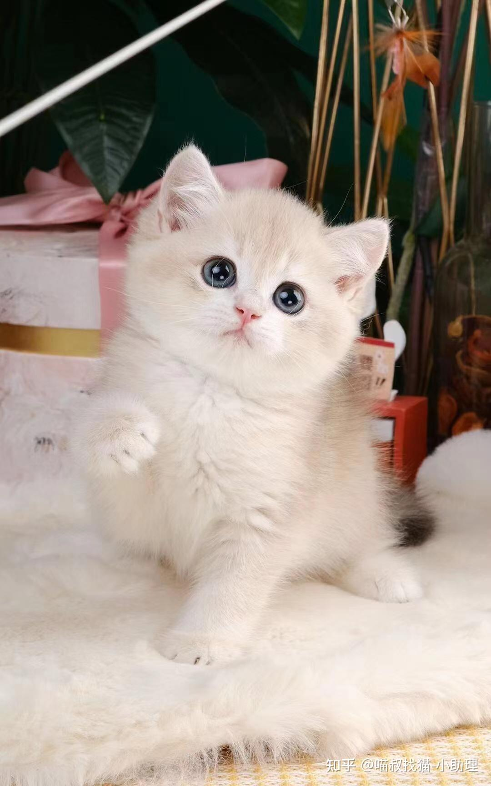缅因猫
缅因猫性情温顺，对人亲近，聪明独立，善解人意，被称为 “温柔的巨人”。它们学习能力强，会开门、开水龙头等，还喜欢与主人一起玩耍，同时也能独处。其叫声轻柔，像小鸟的唧唧声。
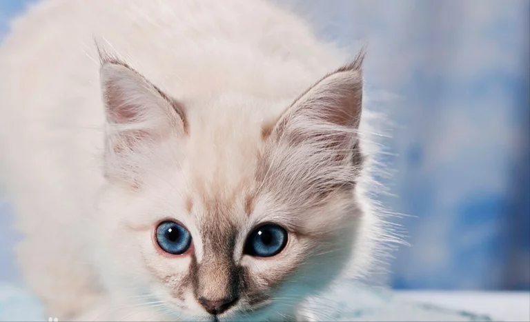三花猫
可爱，温和，长相独一无二，喜欢和主人玩闹，情商高，体质好，好养活，招财。基因不稳定，长相差别大，大多数都是母猫。三花猫很有灵性，会认主，也聪明，平时可以适当给它做些训练，它能帮主人做很多事情。
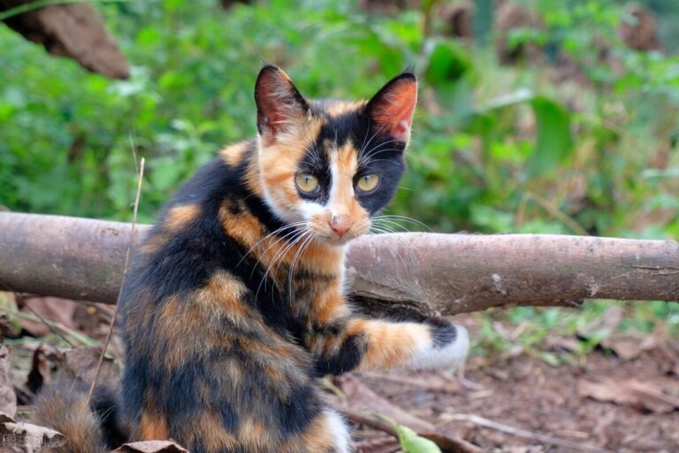 首页
首页 养猫知道
养猫知道 小猫介绍
小猫介绍 小猫图集
小猫图集 在线留言
在线留言